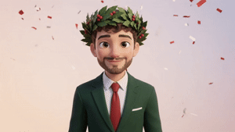

Laurea in Ingegneria Informatica
Carmine
Peluso
Ottobre 2026

🎓
Grazie di cuore
Aver condiviso questo traguardo con voi lo rende ancora più speciale. Grazie per esserci stati, oggi e durante tutto questo percorso!
Il mio Progetto di Tesi
"Un tuffo nel panorama moderno della cybersecurity, dove i sistemi di difesa tradizionali si mostrano inadeguati di fronte ai nuovi attacchi basati su AI. Nasce, dunque, la necessità di introdurre piattaforme di Agentic AI difensive."